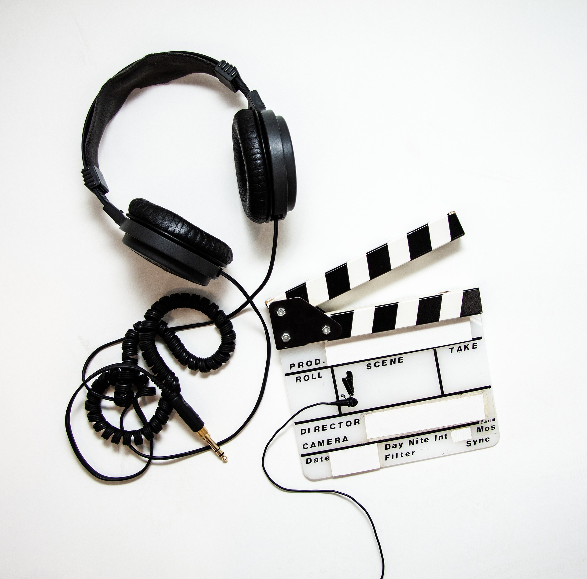

Mini biografia
Soy Sebastian Caipe tengo 17 años soy Estudiante Universitario, actualmente vivo en la ciudad de Yumbo con mis padres y mi hermana menor, anteriormente vivia en Tulua tambien conocida como "el corazon del Valle", pero por distintas razones nos mudamos a aqui al Municipio de Yumbo ya hace 4 años, tengo diferentes hobbies y gustos tales como: jugar video juegos, temas relacionados con la tecnologia y libros etc. Estudio en la universidad del Valle desde ya hace unos 5 meses, no tengo muchas habilidades en las que me destaque. Sin embargo, tengo cierto dominio en el Ingles y en la compresion "rapida" de temas. Me considero una persona responsable, apasionada y estudiosa, tengo como principal objetivo poder manejar y dominar diversos lenguajes de programacion, y si es posible usar mis habilidades aprendidas para ayudar a las personas a hacer su vida medianamente facil.
Mis intereses
Mi segunda pasión
Pasa el cursor o el dedo aquí, please
Mi segunda pasión
El tema de los videojuegos, es un tema que me llena de nostalgia y al mismo tiempo de aprecio. La principal razón por la que siento todo esto por los videojuegos, es porque me ayuda a controlar mis emociones como el estrés, ansiedad y a veces para desconectarme, agregnado que desde pequeño han estado presentes de cierta manera.
Interés por tema de I.A
Pasa el cursor o el dedo aquí, please
Interés por tema de I.A
Es más que todo un interés, a lo que me refiero con un "interés" es que siento cierto interés por el tema. Sin embargo, no soy lo suficientemente apasionado para investigar a fondo este tema, aunque cuando se habla sobre algo relacionado, aporto mis conocimientos y trato de aprender conforme va avanzando la conversación.
Libros y demás
Pasa el cursor o el dedo aquí, please
Libros
Aunque no me considero un lector habitual o el más apasionado a la hora de leer, tengo ciertos intereses por libros enfocados o con historias románticas o con ambientes apocalípticos tales como: El fabricante de lágrimas, la saga de Culpa nuestra, World War Z, Apocalipsis Z etc.
Peliculas - series
Pasa el cursor o el dedo aquí, please

Peliculas
A diferencias de mi "pasion" por los libros, si tengo demasiada pasion por el tema de peliculas y series, desde muy pequeño al igual que los video juegos, me gustan demasiado las peliculas de accion, ciencia ficcion, fantasia, Slow motion y sobre acontecimientos apocalipticos.
Clases y actividades
Primera clases
Pasa el cursor o el dedo aquí, please. (algunas retro-alimentaciones son algo vagas o de poca informacion, ya que aveces me basaba en mi memoria y apunte)
Primera clase
En la primera clase, no hicimos nada fuera de lo comun, ya que durante la clase vimos un poco de informacion sobre la profe, ademas de ver un poco sobre la metodologia a usar durante las clases y diferentes temas, terminando con de ver distintas herramientas para nuestra orientacion - Dintev
Segunda clase
Pasa el cursor o el dedo aquí, please. (algunas retro-alimentaciones son algo vagas o de poca informacion, ya que aveces me basaba en mi memoria y apuntes)
Segunda clase
Iniciamos la segunda clase compartiendo con un código QR desde dónde nos conectábamos y como esta nuestro ánimo. Luego vimos 4 elementos fundamentales (como necesitar de otros y aprender etc) y, pude algo sobre una tabla que me ayudo: 'No pensemos en todo el semestre, pensemos en esta semana algo concreto y posible'. Cerramos reflexionando sobre apoyarnos mutuamente para que nadie cargue con todo solo.
Tecera clase
Pasa el cursor o el dedo aquí, please. (algunas retro-alimentaciones son algo vagas o de poca informacion, ya que aveces me basaba en mi memoria y apunte)
Tercera clase
En clase conectamos las emociones con la programación, diferenciando habilidades duras (lógica, sintaxis, algoritmos) de blandas (confianza, ética, comunicación). Entendimos que comprender el cerebro, nuestro sistema más complejo, nos hace mejorar. Finalmente, vimos herramientas de mejoramiento como: System Reboot con descanso y Break Loop con detener ciclos negativos y gestionar emociones.
Cuarta clase
Pasa el cursor o el dedo aquí, please. (algunas retro-alimentaciones son algo vagas o de poca informacion, ya que aveces me basaba en mi memoria y apunte)
Cuarta clase
Esta clase fue interesante, ya que vimos los factores de estrés en la vida universitaria, viendo conseptos clave como el eustrés: un impulso positivo, el distrés: respuesta física dañina. Viendo tambien sus consecuencias psicológicas y fugas conductuales, ademas de destacar la adicción a redes sociales como escape falso, para despues ver estrategias de técnicas de estudio, buen sueño, frente al desadaptativo.
Quinta clase
Pasa el cursor o el dedo aquí, please. (algunas retro-alimentaciones son algo vagas o de poca informacion, ya que aveces me basaba en mi memoria y apunte)
Quinta clase
En la clase hablabamos sobre la gestión del tiempo algo muy importante, procesos zombie etc. Resaltando que el fallo esta en la desorganización, y que que las apps pueden ser un espejismo. Dividiendose en el alto rendimiento (agendas, objetivos claros) y bajo (metas vagas, desorden). Viendo 3 tipos perfiles: el Falso productivo, el Realizador ideal, el Errático y tactico en entregas.
Sexta clase
Pasa el cursor o el dedo aquí, please. (algunas retro-alimentaciones son algo vagas o de poca informacion, ya que aveces me basaba en mi memoria y apunte)
Sexta clase
Iniciamos la clase con unos tips para mejorar el estudio, para despues resaltar que estudiar sin rumbo colapsa nuestro sistema. Y que es mejor el estudio activo: resolver y explicar, sindo el estudio pasivo "solo leer" un error. Para lograrlo, vimos la repetición Espaciada distribuir repasos, la Elaboración conectar con saberes previos, ademas de que la I.A es una gran herramienta para pistas, test etc
Mi experiencia en el curso
Las primeras clases
Pasa el cursor o el dedo aquí, please
Las primeras clases
En proceso de mejora...
Las ultimas clases
Pasa el cursor o el dedo aquí, please
Las ultimas clases
En proceso de mejora...